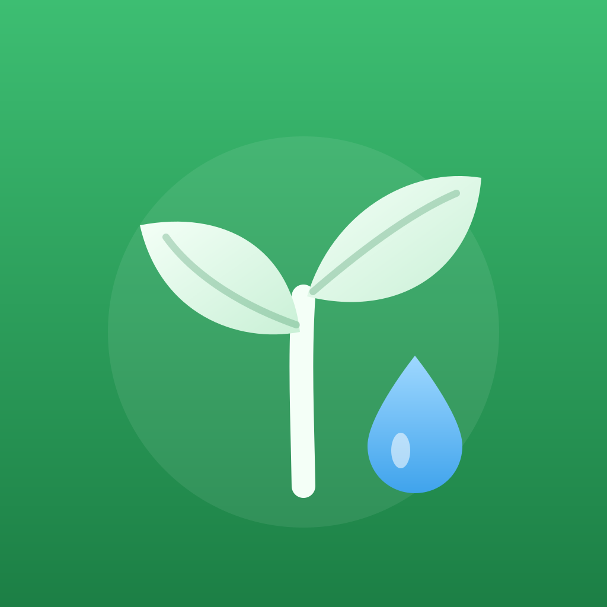
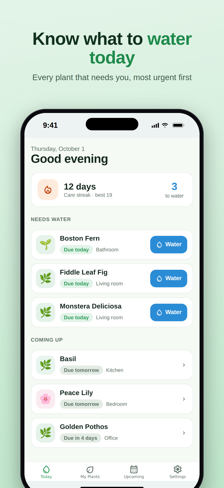
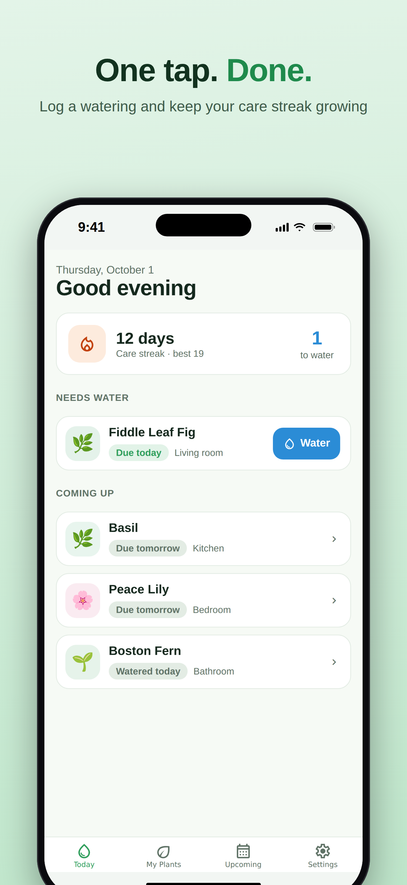
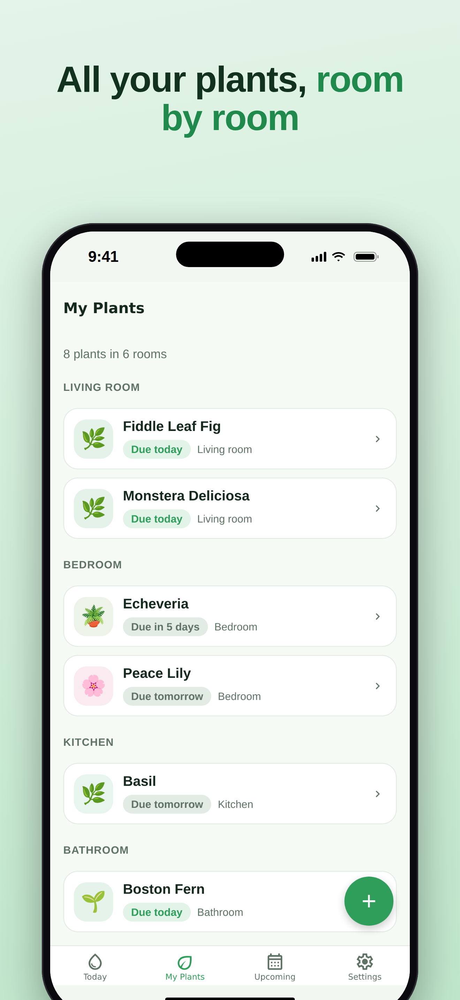
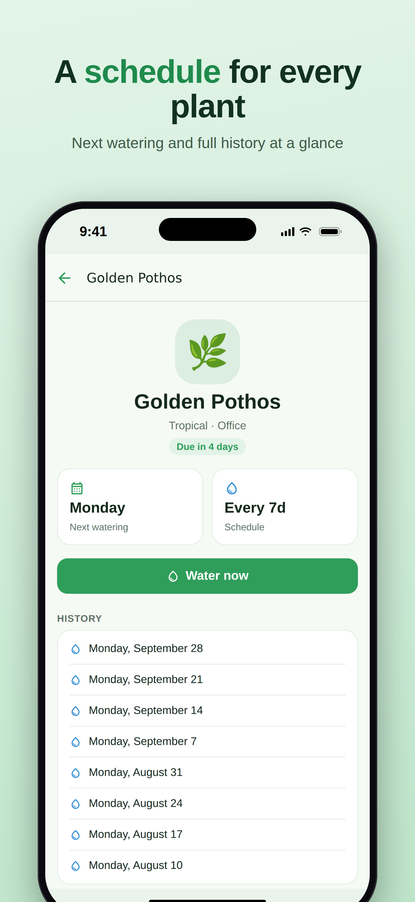
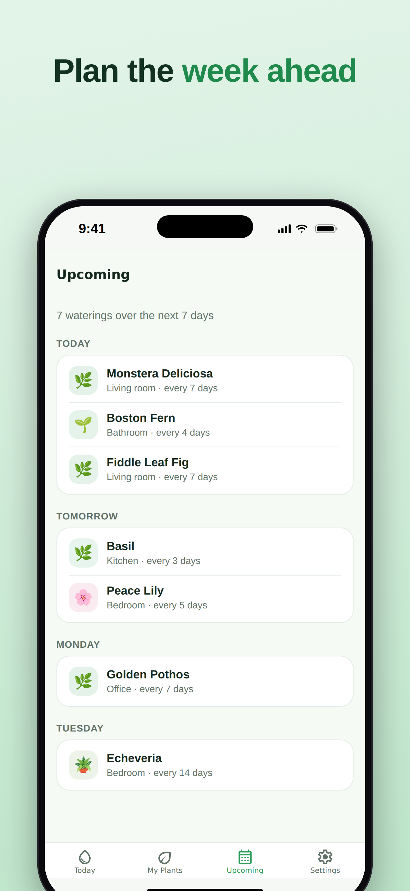
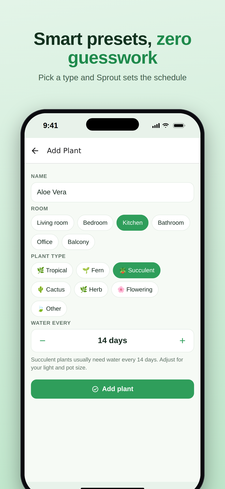

Sprout
Watering reminders & streaks






Sprout tells you exactly which houseplants need water today, so every plant in your home stays healthy.
Add your plants once and Sprout handles the schedule. Each plant gets its own watering rhythm, based on its type and adjusted to your home, and the Today screen shows only what needs attention — most urgent first. One tap logs a watering.
TODAY AT A GLANCE
• See every plant that's due or overdue, sorted by urgency
• Water with one tap and feel the satisfying haptic confirmation
• A calm “all plants are happy” view when you're done
SCHEDULES THAT FIT EACH PLANT
• Presets for tropical plants, ferns, succulents, cacti, herbs and flowering plants
• Fine-tune any plant from every day to every 60 days
• Organize plants by room
BUILD A CARE STREAK
• Keep your streak alive by watering everything that's due
• Track your best streak and build a habit that sticks
PLAN THE WEEK
• The Upcoming view shows the next seven days of watering, grouped by day
• Each plant keeps a full watering history
PRIVATE BY DESIGN
Sprout works completely offline. No account, no ads, and your data never leaves your phone.
© 2026 Sprout